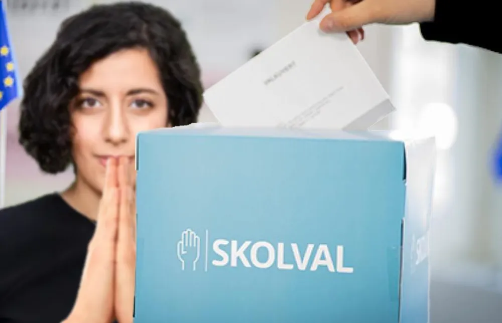

Politik

L ändrar nu sikte: Vill vinna skolvalet
Efter att Liberalerna (L) fortsätter sjunka i mätning efter mätning ska partiledningen byta mål innan det är för sent. Partiledaren Simona Mohamsson (L) förklarade partiets nya ställning under en presskonferens som hölls i fredags. Partiet har helt uteslutit att komma över 4 % gränsen – nu vill de vinna skolvalet.
Planen som Mohamsson förklarade under presskonferensen är att få partiet över 12 % i en endaste skola i landet och därmed komma med i riksdagen. Skolvalet kommer hållas under onsdag och torsdag samma vecka som valet. Liberalerna har också internt framfört förslag om att sänka 4 % gränsen eller att utbilda 400 000 nya lärare inför valet. En undersökning gjord av Novus och beställd av Aftonbladet förutser att Liberalerna skulle få 0,3 % om riksdagsvalet hölls idag. Partiet försvarar den låga mätningen med att de alltid mäter lägre än vad de får.